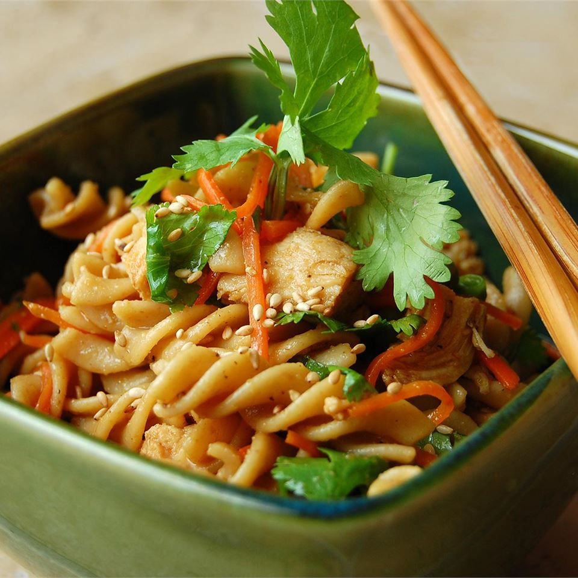

Sesame Pasta Chicken Salad

A refreshing light pasta salad with a delicious Asian flair.
Great for a summer cookout or picnic. Tastes great right away,
and even better if you can allow it to marinate for a while.
Ingredients
- ¼ cup sesame seeds
- 1 (16 ounce) package bow tie pasta
- ½ cup vegetable oil
- ⅓ cup light soy sauce
- ⅓ cup rice vinegar
- 1 teaspoon sesame oil
- 3 tablespoons white sugar
- ½ teaspoon ground ginger
- ¼ teaspoon ground black pepper
- 3 cups shredded, cooked chicken breast meat
- ⅓ cup chopped fresh cilantro
- ⅓ cup chopped green onion
Steps
- Heat a skillet over medium-high heat. Add sesame seeds, and cook stirring frequently until lightly toasted. Remove from heat, and set aside.
- Bring a large pot of lightly salted water to a boil. Add pasta, and cook for 8 to 10 minutes, or until al dente. Drain pasta, and rinse under
cold water until cool. Transfer to a large bowl.
- In a jar with a tight-fitting lid, combine vegetable oil, soy sauce, vinegar, sesame oil, sugar, sesame seeds, ginger, and pepper. Shake well.
- Pour sesame dressing over pasta, and toss to coat evenly. Gently mix in chicken, cilantro, and green onions.
Back to Recipes